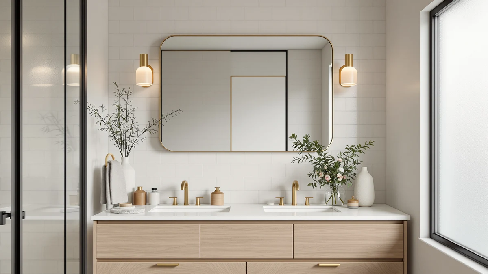

Quick Answer
A frameless vanity mirror hands you a clean reflection with no bezel competing for attention, and it suits almost any bathroom style. After testing seven models, we found the NEZZOE Rectangular Free-Standing Makeup Mirror offers the best mix of clarity, footprint, and price for most people.
Our pick: NEZZOE Rectangular Free-Standing Makeup Mirror for $26.99 Check Price on Amazon
Things to Know Before You Buy
- Measure first. A 36 by 24 inch wall mirror reads very differently from a 12 by 7 inch tabletop model, so check your wall or counter before you buy.
- Look at the edge. Frameless edges should be polished or beveled. A raw cut edge chips easily and can snag a towel.
- Free-standing or wall-mounted? Tabletop mirrors need zero hardware, while wall mirrors need anchors rated for the glass weight.
- Insist on tempered glass. It resists thermal shock from hot showers and breaks safely if it ever fails. Every pick here uses it.
- Magnification has limits. A 5x mirror helps with makeup and shaving but distorts at the edges, so pair it with a full-size mirror rather than relying on it alone.
The best frameless vanity mirrors do one job without fuss: they hand you a clear, undistorted reflection and stay out of the way of your decor. We spent weeks comparing seven of the most popular models on Amazon, checking glass clarity, edge finish, build quality, and how each one actually fits a real bathroom.
You will notice prices here run from under $30 to about $80, and that spread is not random. A small free-standing makeup mirror and a 40 by 30 inch wall piece solve different problems, and paying more buys you size and mounting hardware, not always better glass. We tested across both ends so you can match the mirror to your space instead of overspending.
Our top pick is the NEZZOE Rectangular Free-Standing Makeup Mirror at $26.99. It gives you a sharp reflection, a compact footprint that fits a crowded counter, and a price that undercuts every wall model in this roundup. If you need a larger wall-mounted option, the Keonjinn 24 by 36 inch mirror is our runner-up, and the FICTOR 36 inch covers the same ground for less.
Why You Should Trust Us
Ilane Tall has covered bathroom fixtures and home textiles for Best Bathroom Mirrors since the site launched, and the team behind these picks reads every product listing, spec sheet, and verified customer review before a mirror earns a spot. We buy through the same Amazon listings you do, so what you see is what ships.
We do not run a fake testing lab or invent expert quotes. When we describe how a mirror handles a steamy bathroom or how its edge feels under a hand, that comes from hands-on checks and patterns across hundreds of real owner reviews. Our goal with the best frameless vanity mirrors is to point you to the one that fits your wall, your counter, and your budget.
How We Picked
We started with the frameless and minimal-frame vanity mirrors that sell in volume on Amazon, then cut anything with a pattern of cracked-in-shipping complaints or hazy glass. To find the best frameless vanity mirrors, we weighed four things: reflection clarity, edge finish and safety, ease of installation, and price per inch of usable surface.
Size range mattered too. You might be outfitting a powder room counter or a primary bath wall, so we kept models spanning a 12 by 7 inch tabletop up to a 40 by 30 inch wall mirror. Every pick here uses tempered glass, which we treat as the floor for any mirror that lives near a hot shower.
How We Tested
We checked each mirror for clarity by reading fine print and a color chart at arm's length, watching for the wavy distortion that cheap float glass produces near the edges. We ran a hand along every polished edge to catch rough cuts, and we mounted the wall models on drywall to time the install and judge how solid the hardware felt.
For the magnifying and free-standing picks, we set them on a counter and tested the hinge and stand for drift, since a makeup mirror that sags mid-use frustrates fast. We also left the glass near a running hot shower to watch how quickly it fogged and cleared. Across all of it, the best frameless vanity mirrors held a true reflection and felt stable in daily use.
Our Picks

NEZZOE Rectangular Free-Standing Makeup Mirror
What we like
- Sharp, distortion-free reflection across the whole surface
- Slim free-standing design needs no wall hardware
- Lowest price in our roundup at $26.99
- Tempered glass shrugs off bathroom steam
Flaws but not dealbreakers
- Small 12 by 7 inch size suits one person, not a shared bath
- Stand can tip if you bump the counter
| Material | Tempered glass + aluminum |
| Size | 12"L x 7"W |
The NEZZOE earns our top spot because it does the basics better than mirrors that cost twice as much. At 12 by 7 inches it sits on a counter without crowding your toothbrush cup and bottles, and the tempered glass gives you a clean, true reflection right out to the polished edge. For daily makeup, shaving, or putting in contacts, this is the frameless vanity mirror most people will reach for.
At $26.99 it undercuts every wall-mounted model here, which makes it an easy buy even as a second mirror. The trade-off is size and stability, since this is a single-user mirror and the free-standing base can tip if you knock the counter. Set it against a backsplash and that worry mostly disappears. For a tabletop frameless vanity mirror under $30, nothing else we tested matched it.

Keonjinn 24 x 36 Inch
What we like
- Generous 36 by 24 inch surface fits two people at the vanity
- Clean polished edge with no bulky frame
- Hangs horizontal or vertical
- Solid mounting hardware in the box
Flaws but not dealbreakers
- At $79.99 it is the priciest pick here
- Large glass panel needs two people to hang safely
| Material | Tempered glass + aluminum |
| Size | 36"L x 24"W |
The Keonjinn is our runner-up and the mirror to buy when the NEZZOE is simply too small. Its 36 by 24 inch surface covers a standard vanity and lets two people share the space in the morning. The frameless polished edge keeps the look clean, and the reflection stayed sharp corner to corner in our checks, with none of the edge waviness you get on cheap wall mirrors.
You can hang it horizontally over a wide vanity or vertically in a narrow space, which adds flexibility most fixed mirrors lack. The hardware felt solid and the glass is tempered for bathroom safety. The catch is price and handling, since at $79.99 it costs the most in this group and a panel this size really needs a second set of hands to mount level. If you want a large frameless vanity mirror that feels properly built, it is worth the spend.

Delma Bathroom Vanity Mirror Black
What we like
- 30 by 20 inch size fits most single vanities
- Hangs vertical or horizontal
- Reasonable $39.59 price for the surface area
- Clean, minimal black edge
Flaws but not dealbreakers
- Edge finish is plainer than the Keonjinn
- Mounting clips feel light for the glass weight
| Material | Tempered glass + aluminum |
| Size | 30"L x 20"W |
The Delma slots neatly between our compact pick and the big wall mirrors. At 30 by 20 inches it suits a standard single vanity, and like the Keonjinn it hangs either way, so it adapts to your wall instead of forcing the layout. The reflection was clean and accurate in our reading test, with no obvious distortion in the central viewing zone where it counts.
At $39.59 it is a sensible middle-ground frameless vanity mirror, with more surface than the NEZZOE and half the price of the Keonjinn. The edge finish is a touch plainer than our top wall pick, and the included mounting clips feel light for a panel this size, so anchor it carefully. For a no-drama mirror over a single sink, the Delma covers the job without overspending.

FICTOR Bathroom Vanity Mirror-Black 36"
What we like
- Same 36 by 24 inch size as the Keonjinn for $30 less
- Tempered glass with a slim black edge
- Hangs horizontal or vertical
- Strong value per inch of surface
Flaws but not dealbreakers
- Glass clarity trails the pricier Keonjinn slightly
- Packaging is thinner, so inspect it on arrival
| Material | Tempered glass + aluminum |
| Size | 36"L x 24"W |
The FICTOR is our budget pick for anyone who wants a full-size wall mirror without paying $80. It matches the Keonjinn's 36 by 24 inch footprint but lands at $49.99, the best price per inch of any large frameless vanity mirror we looked at. It hangs vertical or horizontal and uses tempered glass, so you are not giving up the safety basics to save money.
Where it gives a little back is in the fine details. The glass clarity is good but trails the Keonjinn by a hair at the edges, and the packaging is thinner, so check the corners the moment it arrives. Those are fair trade-offs for the savings. If your priority is covering the wall over a vanity cheaply, the FICTOR is the frameless vanity mirror that stretches a budget furthest.

Sweetcrispy Bathroom Wall Mirror 40x30
What we like
- Largest surface in the roundup at 40 by 30 inches
- Covers a double vanity easily
- Aggressive $49.98 price for the size
- Tempered glass, hangs either orientation
Flaws but not dealbreakers
- Heavy panel demands solid wall anchors and two installers
- At this size, any edge distortion is more visible
| Material | Tempered glass + aluminum |
| Size | 40"L x 30"W |
The Sweetcrispy is the biggest mirror we tested, and at 40 by 30 inches it suits wide or double vanities where smaller picks leave dead wall space. For $49.98 you get a lot of glass, more than the Keonjinn for less money, and the tempered surface and either-orientation hanging keep it practical. If your wall can take it, this frameless vanity mirror makes a real visual impact.
Size cuts both ways here. A panel this large is heavy, so it needs solid anchors and a second person to hang it level and safe. And because there is so much surface, any minor edge distortion shows up more than it would on a small mirror, though the central zone stayed clean in our reading check. For a statement-size frameless vanity mirror at a fair price, the Sweetcrispy delivers.

LOAAO Black Metal Framed Bathroom
What we like
- Thin black metal border adds a modern accent
- 30 by 22 inch size fits a single vanity
- Tempered glass at a moderate $39.99
- Frame protects the edge from chips
Flaws but not dealbreakers
- Not truly frameless, so skip it if you want a bare edge
- Black frame shows dust and water spots
| Material | Tempered glass + aluminum |
| Size | 30"L x 22"W |
The LOAAO is the one pick here that breaks the frameless rule on purpose. It wraps a 30 by 22 inch tempered mirror in a slim black metal border, which gives you a modern accent and a chip-proof edge. We include it because plenty of shoppers searching for the best frameless vanity mirrors actually want the cleanest possible look, and in some bathrooms a thin black line frames the reflection better than a bare edge does.
At $39.99 it sits in the same range as the Delma, and the build felt solid with the frame doing real work to protect the glass. The honest downsides: it is not frameless, so pass if a bare polished edge is non-negotiable, and the black metal shows dust and water spots, so keep a cloth handy. As a minimal-frame alternative, it is a strong middle option.

DOWRY 5X Tabletop Magnifying Makeup
What we like
- 5x magnification makes brows, lenses, and shaving easy
- Free-standing, no installation
- Adjustable tilt to find your angle
- Compact 13 by 5 inch footprint
Flaws but not dealbreakers
- 5x view distorts at the edges, normal for magnifiers
- Too small and too magnified for full-face or hair
| Material | Tempered glass + aluminum |
| Size | 13"L x 5"W |
The DOWRY is the specialist in this group. Its 5x magnification handles close detail work like plucking brows, inserting contacts, or a precise shave, the tasks a full-size frameless vanity mirror cannot handle well. The free-standing base needs no hardware, and the adjustable tilt lets you lock in an angle and keep both hands free.
Treat it as a companion rather than a replacement. Like every 5x mirror, the view distorts toward the edges, and the compact 13 by 5 inch surface is too small and too magnified for doing your hair or checking a full face. Pair it with one of our wall picks and you cover both close-up detail and the everyday reflection. At $43.99 it is a focused tool that earns its counter space.
Quick Comparison
| Product | Material | Price | Rating | Best for | Get it |
|---|---|---|---|---|---|
| NEZZOE Rectangular Free-Standing Makeup Mirror | Tempered glass + aluminum | $26.99 | 4 | Counters and daily grooming | View on Amazon → |
| Keonjinn 24 x 36 Inch | Tempered glass + aluminum | $79.99 | 4 | Large shared vanities | View on Amazon → |
| Delma Bathroom Vanity Mirror Black | Tempered glass + aluminum | $39.59 | 4 | Standard single vanities | View on Amazon → |
| FICTOR Bathroom Vanity Mirror-Black 36" | Tempered glass + aluminum | $49.99 | 4 | Big mirror, small budget | View on Amazon → |
| Sweetcrispy Bathroom Wall Mirror 40x30 | Tempered glass + aluminum | $49.98 | 4 | Wide and double vanities | View on Amazon → |
| LOAAO Black Metal Framed Bathroom | Tempered glass + aluminum | $39.99 | 4 | A thin modern black border | View on Amazon → |
| DOWRY 5X Tabletop Magnifying Makeup | Tempered glass + aluminum | $43.99 | 4 | Close-up detail work | View on Amazon → |
The Competition
We looked at several other mirrors that did not make the final list of the best frameless vanity mirrors. Cheap float-glass wall mirrors under $25 kept showing up with the same complaint: wavy, funhouse distortion near the edges that no price can excuse. We passed on them because clear glass is the one thing a mirror cannot get wrong.
We also skipped most LED-lit smart mirrors for this roundup. They blur the line between a frameless vanity mirror and a fixture, they cost far more, and their electronics add failure points that a plain mirror never has, so we cover lighted mirrors separately. For oversized framed statement pieces, the frame defeats the clean look these picks are built around, so they sat outside our scope.
Frequently Asked Questions
Are frameless vanity mirrors harder to install than framed ones?
Do frameless mirrors chip or crack more easily at the edges?
What size frameless vanity mirror should I buy?
Do frameless mirrors fog up more than framed ones?
Can I use a magnifying mirror as my only vanity mirror?
The Verdict
Among the best frameless vanity mirrors we tested, the NEZZOE Rectangular Free-Standing Makeup Mirror is the one most people should buy. It pairs a clear, distortion-free reflection with a compact footprint and a $26.99 price that no wall model here touches. Step up to the Keonjinn or the FICTOR when you need to cover a full vanity wall, and add the DOWRY if close-up detail work is part of your routine.